4. スレッド管理¶
4.1. スレッド一覧¶
ユーザーページへログインし、「スレッド管理」を押下します。
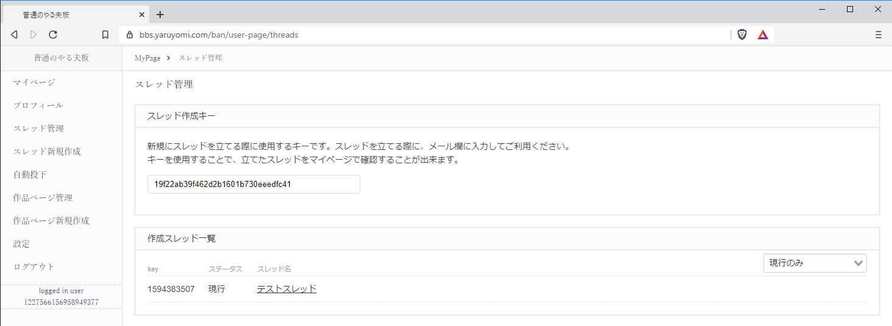作成したスレッド一覧が表示されます。
管理したいスレッドのタイトルを押下します。
※ 右上のプルダウンから、現行スレッド、過去ログの表示を切り替えできます。
4.2. スレッド管理ページ¶
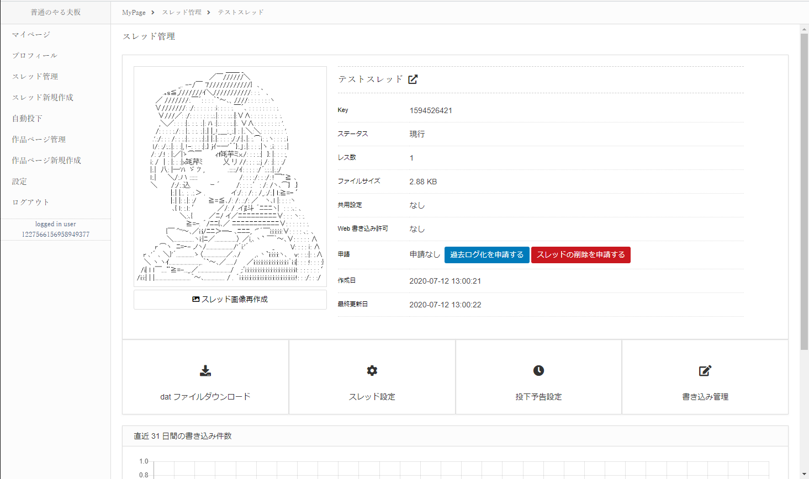スレッド管理ページが表示されます。
4.3. 過去ログ化申請¶
「申請」項目にある「過去ログ化を申請する」ボタンを押下します。
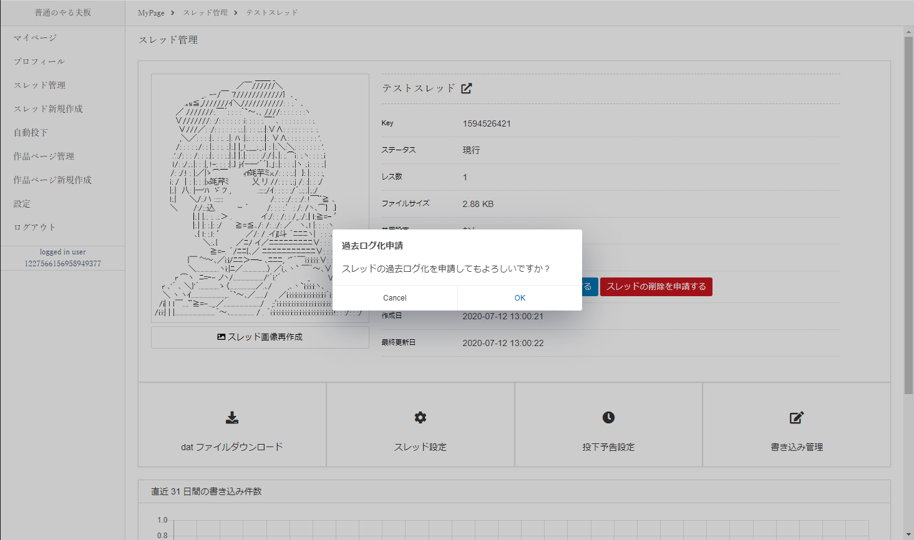確認ダイアログが表示されますので、「OK」を押下します。
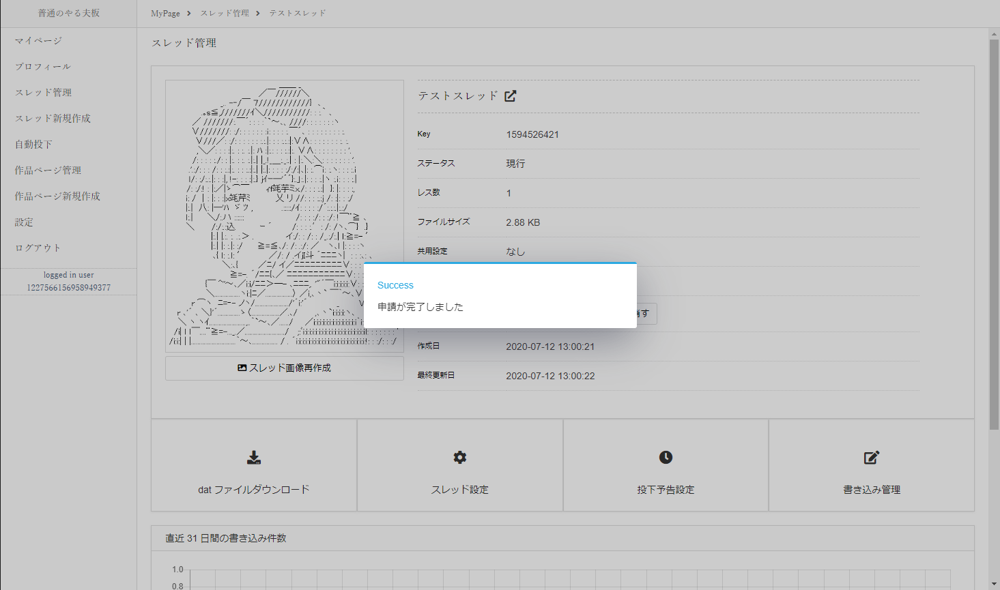申請が完了します。
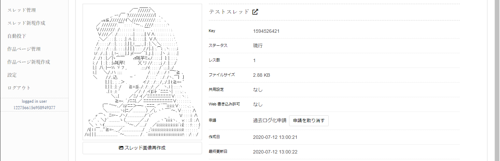申請が完了すると、「申請」項目に「過去ログ化申請」と申請の状態が表示されます。
4.4. スレッドの削除申請¶
「申請」項目にある「スレッドの削除を申請する」ボタンを押下します。
確認ダイアログが表示されますので、「OK」を押下します。
申請が完了します。

申請が完了すると、「申請」項目に「削除申請」と申請の状態が表示されます。
4.5. スレッド申請の取り消し¶
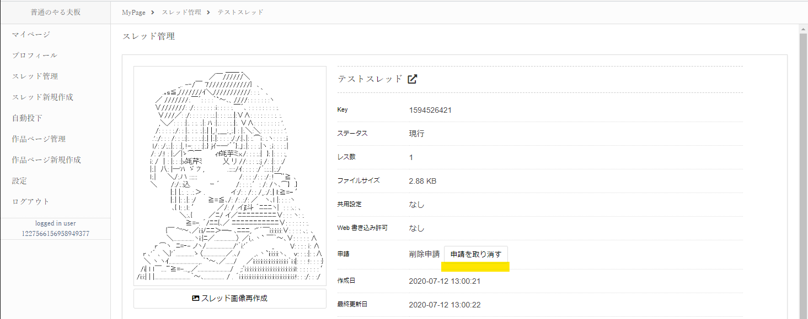過去ログ化、スレッド削除の申請を取り消したい場合、
「申請」項目にある「申請を取り消す」ボタンを押下します。
確認ダイアログが表示されますので、「OK」を押下します。
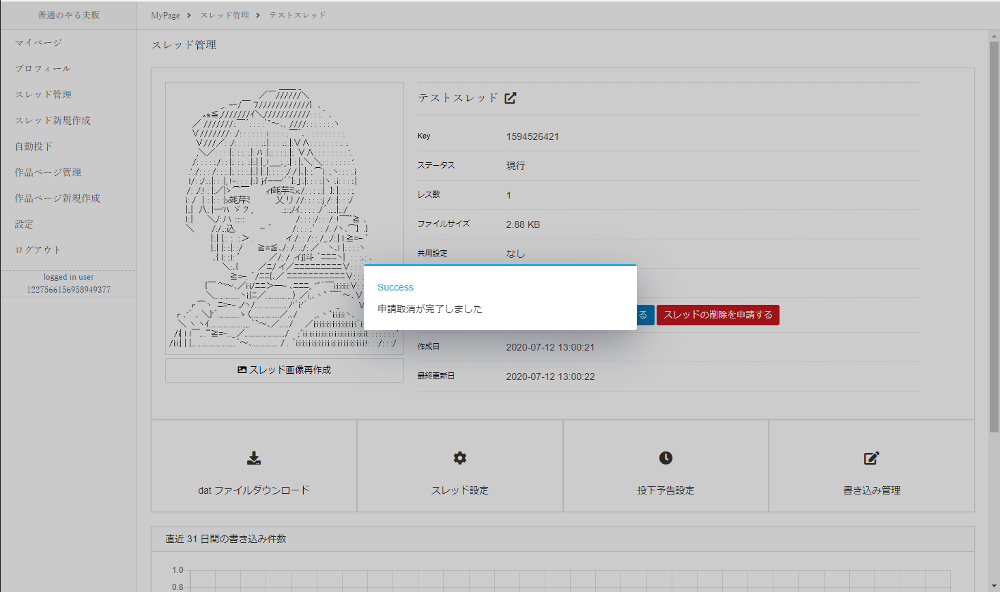申請が完了します。
4.6. スレッド設定¶
スレッド管理ページから「スレッド設定」を押下し、設定ページへ遷移します。
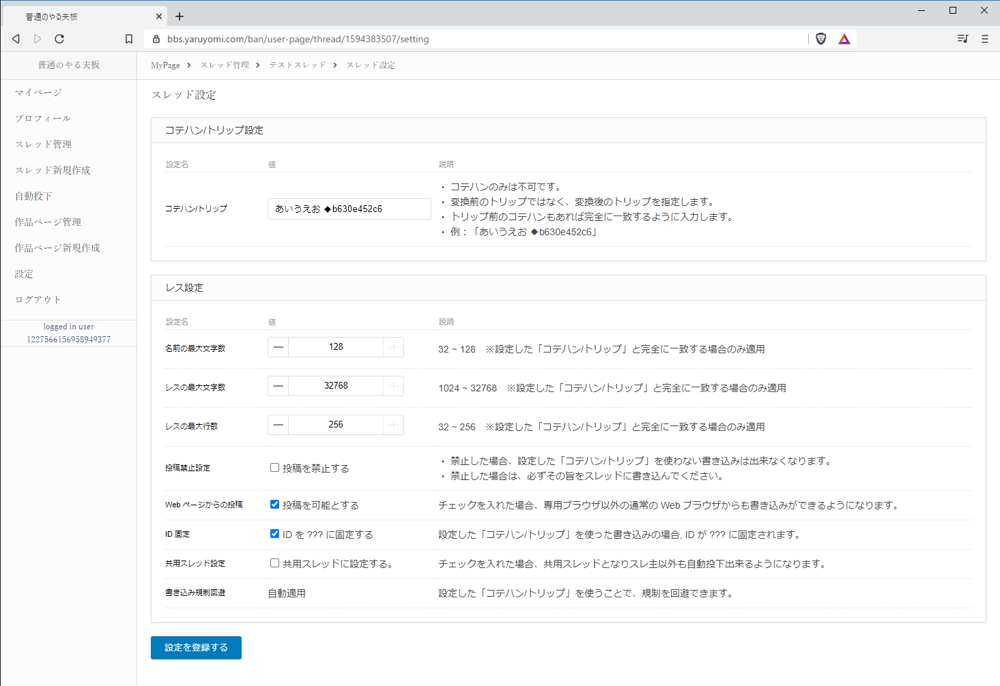設定を入力し、画面下部にある「設定を登録する」ボタンを押下します。
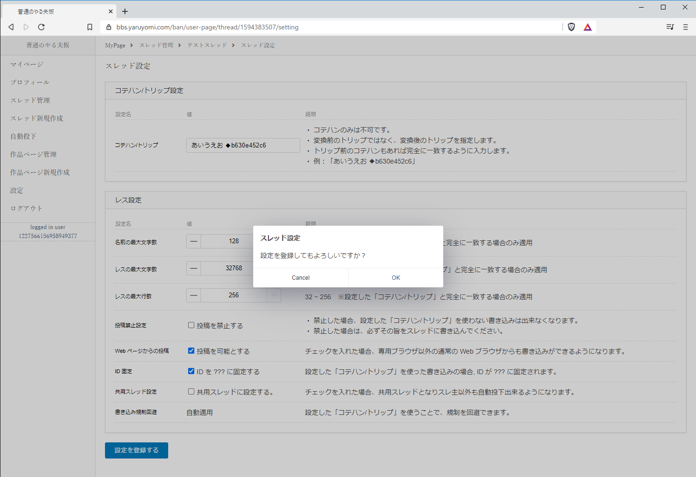確認ダイアログが表示されますので、「OK」を押下します。

設定が完了します。
エラーが表示される場合は、エラー内容に従って入力内容を修正して下さい。
4.7. 書き込み管理¶
スレッド管理ページから「書き込み管理」を押下し、設定ページへ遷移します。
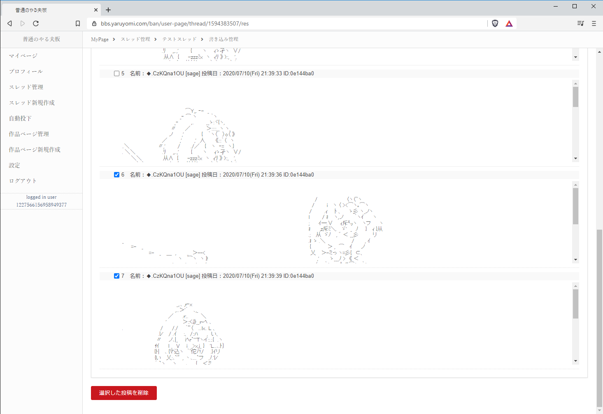スレッドの書き込み内容が表示されますので、削除したい書き込みにチェックを入れ、画面下部にある「選択した投稿を削除」ボタンを押下します。
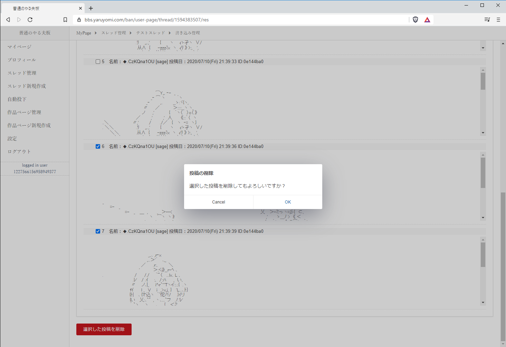確認ダイアログが表示されますので、「OK」を押下します。

書き込みの削除が完了します。
4.8. スレッド画像再作成¶
当掲示板ではスレッド作成時に、1レス目の内容を画像化してサイト上に表示していますが、
スレッド管理ページより任意のレス番号の内容で作成し直すことができます。
スレッド管理ページの「スレッド画像再作成」ボタンを押下します。
レス番号を入力する欄が表示されますので、画像作成に使用したいレスの番号を入力し、「OK」を押下します。
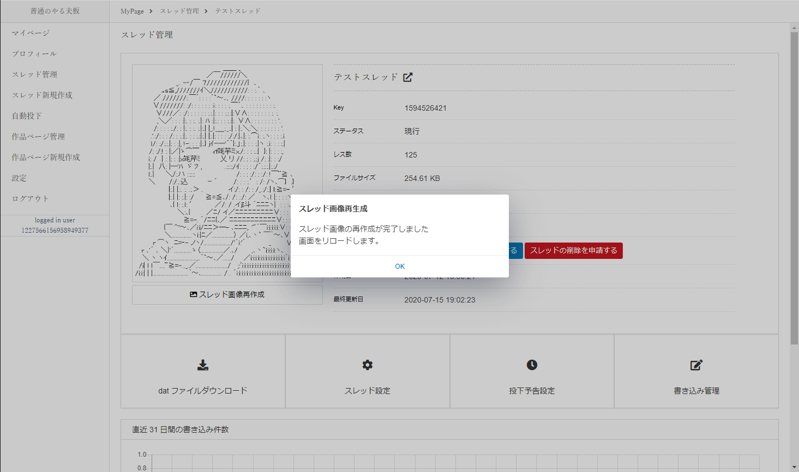画像の再作成が完了します。
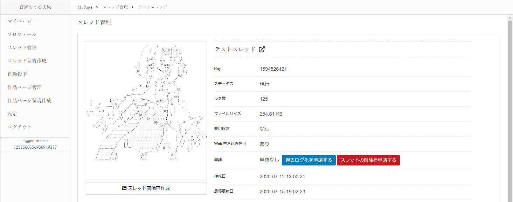画面がリロードされて、再作成された画像が表示されます。
注釈
画像は同じファイル名で作成されるため、ブラウザのキャッシュが適用されます。 その場合、再作成後も古い画像が残ったままとなりますので、ブラウザのキャッシュを削除するか、 スーパーリロードを実行して下さい。